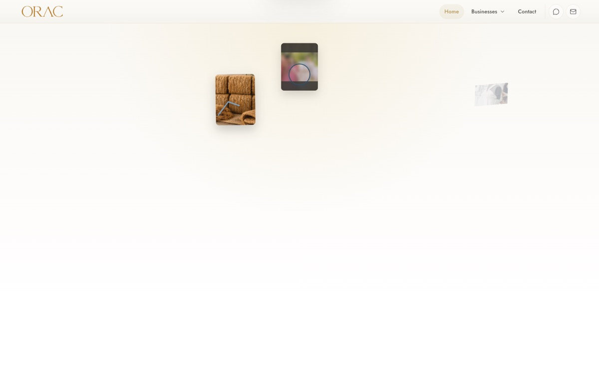

Real capture1

Beat 01 · Opening initial
Independent worlds enter
Three real business photos enter from three edges — International (coir + a drawing trade‑route line), Eventus (letterboxed, blurred), Luxe (faint, right).
Direction
Enter fragments larger & legible; Eventus at ~40% blur (not the ~100% seen here); Luxe at full opacity — each world must register before it moves.
Enter fragments larger & legible; Eventus at ~40% blur (not the ~100% seen here); Luxe at full opacity — each world must register before it moves.